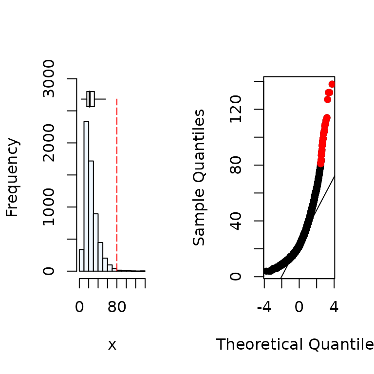
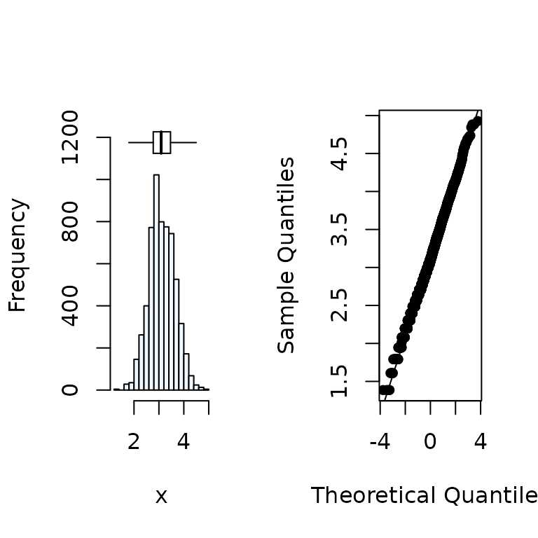
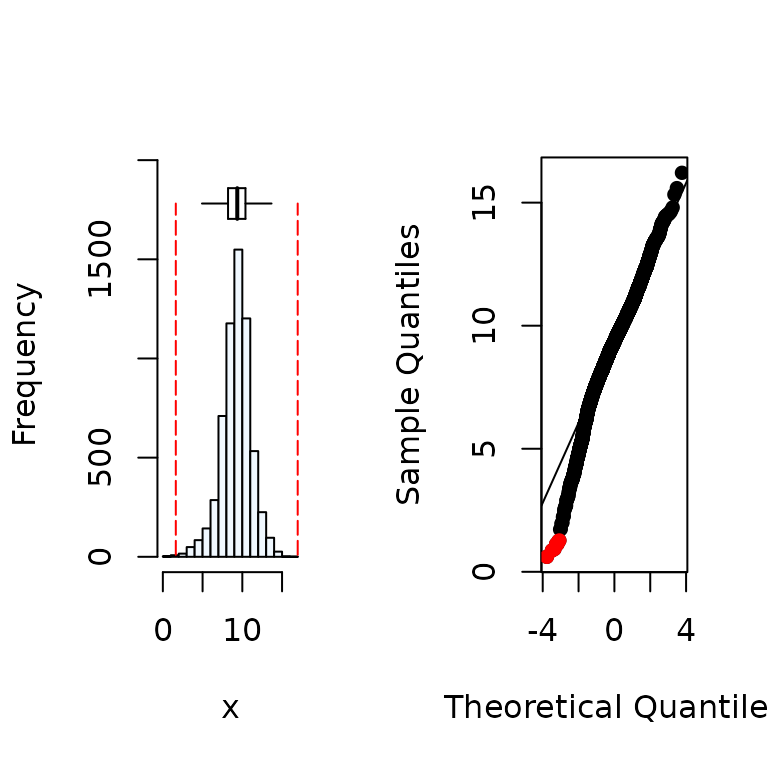
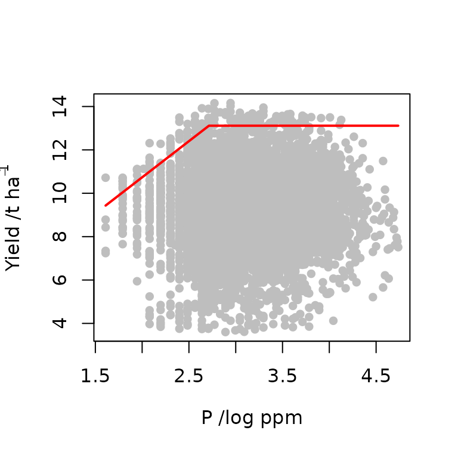
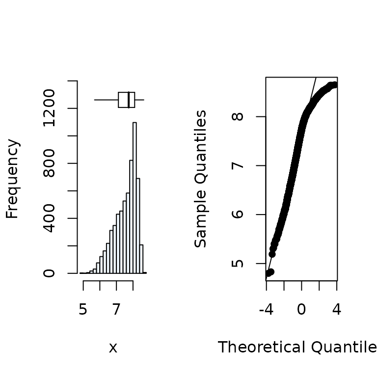
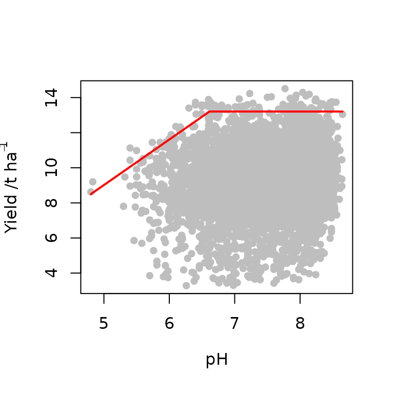
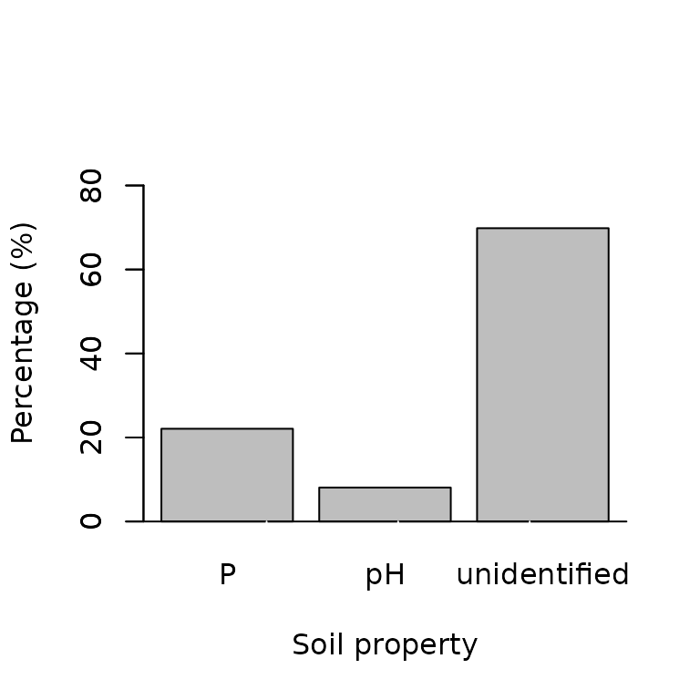
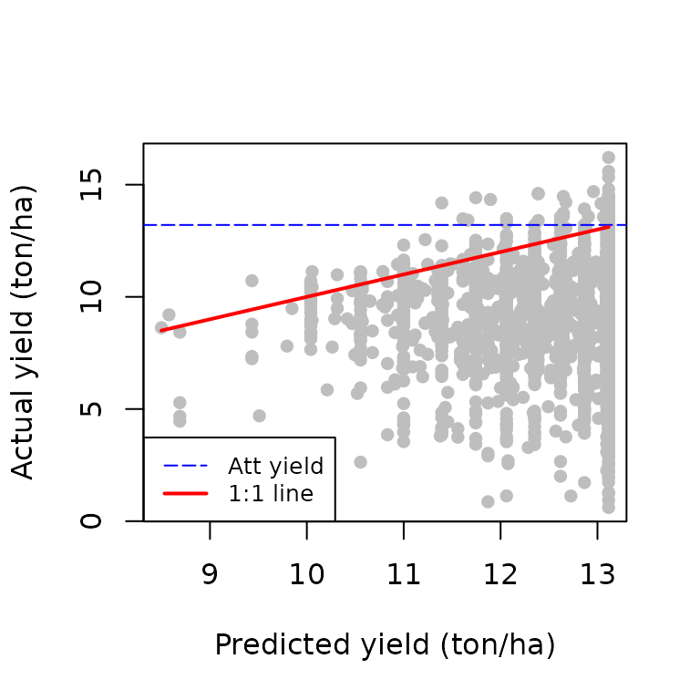

Use of censored bivariate normal model function for yield gap analysis
Source:vignettes/Censored_bivariate_normal_model.Rmd
Censored_bivariate_normal_model.RmdIntroduction
The censored bivariate normal model (Lark and Milne, 2016) is a
statistical method to fit the boundary line to data. It fits the
boundary line using the maximum likelihood approach on a censored
bivariate distribution. This removes the subjectivity associated with
the other boundary line fitting methods ( bolides, Binning and quantile
regression) of selecting boundary points to which the boundary line is
fitted or specifying an arbitrary quantile to model. It also gives
evidence for the presence of boundary in a data set against a bivariate
normal null distribution. This method has been previously used to fit
boundary lines to data on nitrous oxide emission as a function of soil
moisture (Lark and Milne, 2016) and, wheat yield as a function of
nutrient concentration (Lark et al. 2020). An R
package, BLA, contains exploratory and boundary fitting
functions that can be used in the process of fitting a boundary line to
data using the censored bivariate normal model. This vignette gives a
step by step process for fitting the boundary line and subsequent
post-hoc analysis. In this demonstration, the data set soil
will be used and boundary line analysis will be carried out on soil P
and pH.
Load the BLA package
Load the BLA package using the library()
function. In addition, the aplpack package is also loaded.
The aplpack package contains the bagplot()
function which is used to identify outliers in a data set.
Yield gap analysis using boundary lines
The data that is going to be used for this is called the
soilwhich is part of the BLA package. It
contains measures of wheat yield on farms from different parts of the UK
and its associated soil properties pH and phosphorus. The process of
yield gap analysis involves two step that include (1) fitting the
boundary line and (2) determining the most limiting factor. We will
first fit the boundary line to soil P and then to pH after which the
most limiting factor will be determined.
data("soil")Soil P boundary line fitting
Data exploration
Exploratory analysis is an essential initial step in fitting a boundary line to data. This step ensures that the assumptions for the censored bivariate normal model are met. Three exploratory procedures are performed on the data which include (1) Assessing the plausibility of normality of variables, (2) Removal of outliers, and (3) Testing for evidence of boundary in the data.
1. Assessing normality of independent and dependent variable
Boundary line model fitting using cbvn() requires that
the independent (x) and dependent
(y) variables are normally distributed albeit with
censoring of the variable y. The
summastat() function gives summary statistics of the
distribution of a variable. The octile skewness is a robust measure of
skew, and we expect its absolute value to be less than 0.2 for a
normally distributed variable. We also assess plots of the data, bearing
in mind that the dependent variable may be subject to censoring of large
values under our target model.
x<-soil$P
y<-soil$yield
#Distribution of the x variable
summastat(x) 
#> Mean Median Quartile.1 Quartile.3 Variance SD Skewness
#> [1,] 25.9647 22 16 32 207.0066 14.38772 1.840844
#> Octile skewness Kurtosis No. outliers
#> [1,] 0.3571429 5.765138 43
summastat(log(x)) 
#> Mean Median Quartile.1 Quartile.3 Variance SD Skewness
#> [1,] 3.126361 3.091042 2.772589 3.465736 0.2556936 0.5056615 0.1297406
#> Octile skewness Kurtosis No. outliers
#> [1,] 0.08395839 -0.05372586 0
x<-log(x) # since x required a transformation to assume it is from a normal distribution.
#Distribution of the y variable
summastat(y)
#> Mean Median Quartile.1 Quartile.3 Variance SD Skewness
#> [1,] 9.254813 9.36468 8.203703 10.39477 3.456026 1.859039 -0.4819805
#> Octile skewness Kurtosis No. outliers
#> [1,] -0.05793291 1.292635 72. Removal of outliers
Boundary line analysis is sensitive to outlying values and hence it
is required that they are identified and removed. This can be done using
the bagplot() function of the aplpack package.
The bag plot, a bivariate box plot, has four main components, (1) a
depth median (equivalent to the median in a box plot) which is
represents the centre of the data set, (2) The bag which contains 50% of
the data points (eqiuavalent to the interquartile range), (3) a ‘fence’
that separates probable outliers, (4) a loop which contains points
outside the bag but are not outliers.
# Create a dataframe containing x and y
df<-data.frame(x,y)
# Input the dataframe into the bagplot() function
bag<-bagplot(df,show.whiskers = FALSE, ylim=c(0,20),create.plot = FALSE)
# Combine data points from "bag" and within the loop i.e. exclude the outliers
dat<-rbind(bag$pxy.bag,bag$pxy.outer)
# Output is a matrix, we can pull out x and y variables for next stage
x<-dat[,1]
y<-dat[,2]3. Testing data for presence of boundary
If a boundary exists in a data set, it is expected that there will be
some clustering of observations at the upper edges of the data cloud
compared to a bivariate normally distributed data for which data points
at the upper edges are sparse because of the small probability density .
A boundary can be assumed in a data set if there is evidence of
clustering at the upper edges. The expl_boundary()
function, which is based on the convex hull, can be used to access
presence of boundary (Miti et al, 2024). This function checks
probability of the observed clustering if it came from a bivariate
normal distribution (p-value).
expl_boundary(x,y) # may take a few minutes to completeFrom the results, the probability (p-value) of the having points close to each other as in our data if it came from a bivariate normally distributed data is less than 5%. Therefore, there is evidence of bounding effects in the data in the right and left sections of the data. Note that, in the plot, the data is split into right and left sections to get more information on the clustering nature of points.
Fitting the boundary line to data
The exploratory tests indicated that the data provide evidence of a
boundary, outliers have been identified and removed, and the variables
x and y are normally
distributed. We therefore proceed to fit a boundary line model to the
data set using the censored bivariate normal model. The function
cbvn() fits the boundary line to the data. For more
information about the arguments of this function, check
?cbvnArgument values for the function cbvn() need to be set .
Firstly, create a data-frame containing x and
y, called data.
data<-data.frame(x,y) #This is an input dataframe containing the variablesSecondly, the cbvn() requires initial starting values,
start, which are parameters of the boundary line (the
censor) and the bivariate normal distribution. Starting values of the
boundary line depend on the model that one wishes to fit to the data
(see options in ?cbvn) . In this case, we shall fit a
linear+plateau model (lp) and hence the parameters are the plateau value
and the intercept and slope of the linear component. The boundary line
start values can be obtained using the function
startValues(). For more information on the
startValues() function run the code
?startValues. With a scatter plot of
y against x active in the
plot window in R, run the function
start.values("lp"), then click on the plot, the point you
expect to be the lowest and the largest response of a linear model at
the boundary. Note that starting values for other models can be
determined by changing the model name from “lp” to the desired models
(see ?startValues help file).
plot(x,y)
startValues("lp") Next, determine the parameters of the bivariate normal distribution
which include the means of the x and
y variables, standard deviation of the
x and y variables, and the
correlation of x and y.
mean(x)
#> [1] 3.125969
mean(y)
#> [1] 9.28862
sd(x)
#> [1] 0.5005755
sd(y)
#> [1] 1.728996
cor(x,y)
#> [1] 0.0346758
#The parameters of the boundary line and the data can be combined in a #vector start in the order
#start<-c(intercept, slope, max response, mean(x), mean(y), sd(x), sd(y), cor(x,y))Another important argument is the standard deviation of the
measurement error, sigh, of the response variable
y. In some cases this might be estimated from observations
of analytical duplicates, or experiments to determine measurement error
for variables such as crop yield (e.g. Kosmowski et al. 2021).
However, in cases when this is not available, it can be estimated using
different options. One option of estimation is to use a variogram if the
location data for samples is available. In that case, nugget variance
which is the unexplained short distance variations can be taken as an
estimate of the measurement error. If this is not possible, a profiling
procedure can be done. This is done by fitting a proposed model using a
varied number of sigh values while keeping the rest of the
model parameters constant. The log-likelihood values of the model for
each sigh are determined and the value that maximizes the
likelihood can be selected from the log-likelihood profile. This can be
implemented using the ble_profile() function. For more
information on this function run
?ble_profileThe possible sigh values can be set to 0.5, 0.7 and 0.8
and we can check the likelihood profile.
sigh=c(0.5,0.7,0.8)
ble_profile(data,start,sigh,model = "lp") # may take a few minutes to run for large datasetsFrom the likelihood profile, the sigh that maximizes the
likelihood is around 0.65. We can use this for the value of
sigh. Now that all the arguments required for
cbvn() function are set, the boundary line can be
fitted
start<-c(4,3,13.6,3,9,0.50,1.9,0.05)
model1<-cbvn(data,start=start,sigh=0.7,model = "lp", xlab=expression("P /log ppm"), ylab=expression("Yield /t ha"^{-1}), pch=16, col="grey")
model1
#> $Model
#> [1] "lp"
#>
#> $Equation
#> [1] y = min (β₁ + β₂x, β₀)
#>
#> $Parameters
#> Estimate Standard error
#> β₁ 4.06696830 1.062543187
#> β₂ 3.33394003 0.483101081
#> β₀ 13.11509466 0.162435745
#> mux 3.12596804 0.006451141
#> muy 9.29877801 0.022677786
#> sdx 0.50053541 0.004550540
#> sdy 1.60137534 0.018125877
#> rcorr 0.03013859 0.014294338
#>
#> $AIC
#>
#> mvn 32429.55
#> BL 32399.25The boundary line is fitted and the parameters together with their corresponding standard error values are obtained. However, there is one question that needs to be addressed before we proceed,
Is the boundary line ideal for this data?
While fitting the BL model to the data, the cbvn() also
fits a bivariate normal model with no boundary and calculates it
AIC value. From our output, the AIC value of
the BL model is lower than that of the bivariate normal model.
Therefore, the BL model is appropriate. The parameters of the boundary
line can now be used to predict the boundary yield given the value of
P.
The function predictBL() in the BLA package can be used
for this. For more information about the function, see
?predictBLWe need to predict the largest expected yield for each point given the soil P. We will replace any missing values with the mean value of P.
xp<-log(soil$P) # let xp be the P content in our dataset
xp[which(is.na(xp)==T)]<-mean(xp,na.rm=T)
P<-predictBL(model1,xp)We can proceed to the next variable pH using the same procedure.
Soil pH boundary line fitting
Data exploration
1. Testing for normality of independent and dependent variable
x<-soil$pH
y<-soil$yield
# Distribution of the x variable
summastat(x) 
#> Mean Median Quartile.1 Quartile.3 Variance SD Skewness
#> [1,] 7.566206 7.74 7.12 8.1 0.4344038 0.6590931 -0.7968046
#> Octile skewness Kurtosis No. outliers
#> [1,] -0.3594771 -0.07912815 02. Removal of outliers
# Create a dataframe of x and y which is an input into the bagplot() function
df<-data.frame(x,y)
# Input the dataframe into the bagplot() function.
bag<-bagplot(df,show.whiskers = FALSE, ylim=c(0,20),create.plot = FALSE)
# Combine data points from "bag" and within the loop
dat<-rbind(bag$pxy.bag,bag$pxy.outer)
# Output is a matrix, we can pull out x and y variables for next stage
x<-dat[,1]
y<-dat[,2]3. Testing data for presence of boundary
This was already done using P and boundary existence was confirmed
Fitting the boundary line to data
From the exploratory tests, they indicated that the data provides
evidence of boundary existence, outliers have been identified and
removed, and the variables x and
y are normally distributed. We therefore, proceed
to fit a boundary line model to the data set using the censored
bivariate normal model. The function cbvn() fits the
boundary line to the data.
We determine the argument values for the function cbvn()
as before . Firstly, create a data-frame containing
x and y, called
data.
data<-data.frame(x,y) #This is an input dataframe containing the variablesSecondly, the cbvn() requires initial starting values,
start, which are parameters of the boundary line
(the censor) and the bivariate normal distribution. In this case, we
shall fit a linear+Plateau model (lp) and hence the parameters are the
plateau value and the intercept and slope of the linear component. With
a scatter plot of y against
x active in the plot window in R, run
the function start.values("lp"), then click on the plot,
the point you expect to be the lowest and the largest response of a
linear model at the boundary. Note that starting values for other models
can be determined by changing the model name from “lp” to the desired
models (see ?startValues help file)
plot(x,y)
startValues("lp") Next, determine the parameters of the bivariate normal distribution
which include the means of the x and
y variables, standard deviation of the
x and y variables, and the
correlation of x and y.
mean(x)
#> [1] 7.569203
mean(y)
#> [1] 9.277917
sd(x)
#> [1] 0.656315
sd(y)
#> [1] 1.755941
cor(x,y)
#> [1] 0.1169399
#The parameters of the boundary line and the data can be combined in a #vector start in the order
#start<-c(intercept, slope, max response, mean(x), mean(y), sd(x), sd(y), cor(x,y))
start<-c(-9,3, 13.5,7.5,9,0.68,2.3,0.12)The standard deviation of the measurement error,
sigh was already determine as 0.7. Now that all
the arguments required for cbvn() function are set, the
boundary line can be fitted
model2<-cbvn(data,start=start,sigh=0.7,model = "lp", xlab=expression("pH"), ylab=expression("Yield /t ha"^{-1}), pch=16, col="grey")
model2
#> $Model
#> [1] "lp"
#>
#> $Equation
#> [1] y = min (β₁ + β₂x, β₀)
#>
#> $Parameters
#> Estimate Standard error
#> β₁ -3.9496784 0.625843951
#> β₂ 2.5933540 0.107681571
#> β₀ 13.2048773 0.173877733
#> mux 7.5692058 0.008439500
#> muy 9.2839579 0.022826649
#> sdx 0.6562763 0.005967654
#> sdy 1.6239692 0.018077098
#> rcorr 0.1233113 0.014184125
#>
#> $AIC
#>
#> mvn 35962.04
#> BL 35946.16The boundary line is fitted and the parameters together with their
corresponding standard error values are obtained. From our output, the
AIC value of the BL model is lower than that of the
bivariate normal model. Therefore, the BL model is appropriate. The
parameters of the boundary line can now be used to predict the boundary
yield given the value of pH using the function predictBL().
We need to predict the largest expected yield for each farm given the
soil pH. We will replace any missing values with the mean value of
pH.
Determination of most limiting factor
The boundary line analysis has been used to determine the most limiting factor in many yield gap analysis studies. This is according to the von Liebig (1840) law of the minimum
$$ y={\rm min}(f_1(x_1),f_2(x_2),...,f_n(x_n)) $$
In the BLA package, the function limfactor() can be used
to determine the most limiting factor at each point. For more
information on the function, see
?limfactorFor the two soil properties in our dataset, the most limiting factor for each data point is determined as
Limiting_factor<-limfactor(P,pH) # This produces a list of length 2 containg a vector limiting factors at each pont and the maximum predicted response in the dataset.
Limiting_factors<-Limiting_factor[[1]] We can check the proportion of cases in which each of the soil properties was limiting
Lim_factors<-Limiting_factors$Lim_factor
barplot(prop.table(table(Lim_factors))*100,
ylab = "Percentage (%)",
xlab = "Soil property",
col = "grey",
ylim=c(0,90))
axis(side = 1, at = seq(0, 4, by = 1), labels = FALSE, lwd = 1, col.ticks = "white")
axis(side = 2, lwd = 1) 
As only two factors were evaluated, most of the yield gap cause was unidentified. This is because there many other factors affecting yield which we did not consider in this case. You can also plot the predicted yield by the most limiting factor against the actual yield.
plot(Limiting_factors$Rs, soil$yield,
xlab="Predicted yield (ton/ha)",
ylab="Actual yield (ton/ha)", pch=16, col="grey")
abline(h=Limiting_factor[[2]], col="blue", lty=5, lwd=1)
lines(c(min(Limiting_factors$Rs),max(Limiting_factors$Rs)),
c(min(Limiting_factors$Rs),max(Limiting_factors$Rs)),
col="red", lwd=2)
legend("bottomleft",legend = c("Att yield", "1:1 line"),
lty=c(5,1), col=c("blue", "red"), lwd=c(1, 2), cex = 0.8)
The dashed blue line represents the attainable yield for this particular setting. The 1:1 describes the situations in which the actual yield is equal to the predicted yield by the most limiting factor. The yield gap for each point is equivalent to the vertical distance between the point and the 1:1 line. The points above the 1:1 line are considered to have zero yield gap and their position above the line is only due to measurement error.
Concluding remarks
The censored bivariate normal model has been used to carry out a yield gap analysis. The advantage of using this method over the other boundary line fitting methods is that it is based on statistical principles and it removes the subjectivity associated with selection of bin sizes and the quantile to consider as boundary as it is done in the binning methodology and quantile regression. Furthermore, the uncertainty around the boundary line can also be determined.
References
Kosmowski, F., Chamberlin, J., Ayalew, H., Sida, T., Abay, K., & Craufurd, P. (2021). How accurate are yield estimates from crop cuts? evidence from small-holder maize farms in ethiopia. Food Policy, 102 , 102122. https://doi.org/10.1016/j.foodpol.2021.102122
Lark, R. M., Gillingham, V., Langton, D., & Marchant, B. P. (2020). Boundary line models for soil nutrient concentrations and wheat yield in national-scale datasets.European Journal of Soil Science, 71 , 334-351. https://doi.org/10.1111/ejss.12891
Lark, R. M., & Milne, A. E. (2016). Boundary line analysis of the effect of water filled pore space on nitrous oxide emission from cores of arable soil. European Journal of Soil Science, 67 , 148-159. https://doi.org/10.1111/ejss.12318
Milne, A. E., Wheeler, H. C., & Lark, R. M. (2006). On testing biological data for the presence of a boundary. Annals of Applied Biology, 149 , 213-222. https://doi.org/10.1111/j.1744-7348.2006.00085.x
Miti, C., Milne, A., Giller, K., Sadras, V., & Lark, R. (2024). Exploration of data for analysis using boundary line methodology. Computers and Electronics in Agriculture, 219. https://doi.org/10.1016/j.compag.2024.108794